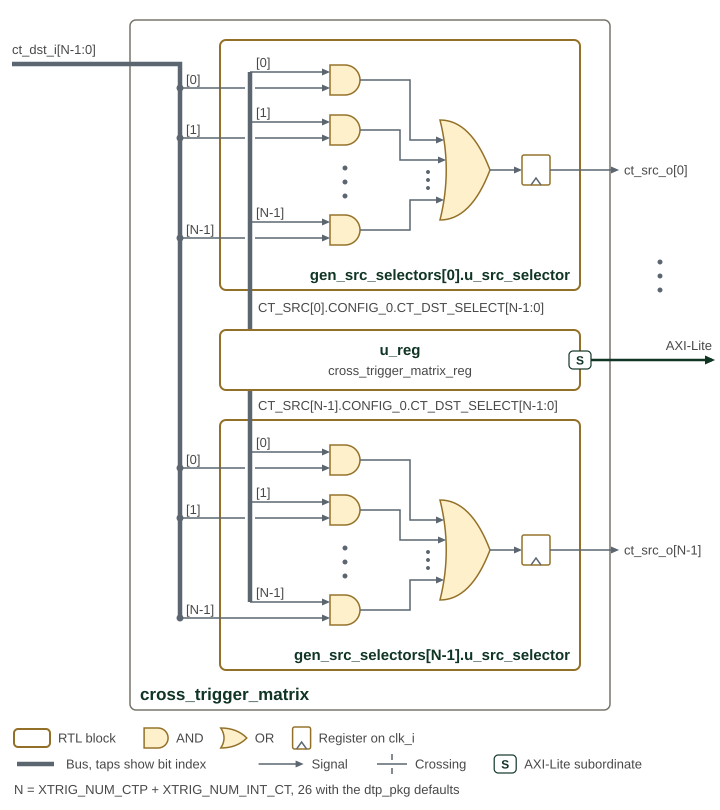

Cross-Trigger Matrix
The Cross Trigger Matrix (CTM) is an AND-OR crossbar that aggregates and statically routes cross-trigger pulses between all sources (CTPs, CLAs, internal devices) and sinks under AXI-Lite CSR control. The default DTP configuration uses 26 input ports and 26 output ports.
1. Overview
The CTM is compatible with both wire-OR and point-to-point CTPs. Typical connections include Core Logic Analyzers (CLAs) and Cross Trigger Ports (CTPs). Each device connected to the CTM acts as both a source and a sink.
The NUM_CT_SRC and NUM_CT_DST parameters in
regs/cross_trigger_matrix.rdl define the matrix dimensions and default to
26 each. The RTL derives the following localparams from the generated
register map:
Table 1 lists the source and destination counts used by the CTM register map.
| Constant | Value | Description |
|---|---|---|
|
26 |
Number of CT_Src output ports (sized by the |
|
26 |
Number of CT_Dst input ports (sized by the |
These values cannot be overridden at instantiation. Resizing the matrix
requires regenerating the register map with PeakRDL addrmap overrides
(OCAH_REG_RDL_PARAMS_cross_trigger_matrix) that match the elaborated
Cross-Trigger Network total (NUM_CTP + NUM_INT_CT). The CTN fails
elaboration if that total disagrees with the generated NUM_CT_SRC and
NUM_CT_DST. The CTM takes the AXI-Lite request and response types as
module parameters, which the CTN overrides to match its own crossbar.
The wrapper passes the register block only the address bits its register map spans, and the CTN ends the matrix’s crossbar window at the end of that map. An access past the last CT_Src register completes with DECERR rather than reaching a register. The 512-byte CTM aperture holds 64 source registers at the 8-byte stride, so a matrix of up to 64 ports needs only the regenerated CTM and CTN register maps.
Every CT_Src port occupies 8 bytes regardless of the port count. At or below 32 destinations, each register is a single 32-bit word with immediate write semantics. Above 32 destinations both words must be written before the mask takes effect, preventing half-programmed states.
The register map for the CTM and for each CTP is included once in the CTN Memory Map section. This page covers the crossbar architecture and signal interface only.
2. Architecture
The Cross Trigger Matrix has N source ports and N destination ports, one of
each per CTM port of the Cross Trigger Network, so
N = XTRIG_NUM_CTP + XTRIG_NUM_INT_CT. The dtp_pkg defaults of 16 external
CTPs and 10 internal CTPs give N = 26. cross_trigger_matrix_pkg takes
NUM_CT_SRC and NUM_CT_DST from the register map, and the CTN asserts at
elaboration that both equal NUM_CTP + NUM_INT_CT, so resizing the matrix
means regenerating regs/cross_trigger_matrix.rdl to match. The matrix
implements a combinatorial AND-OR crossbar with registered outputs to route
cross-trigger pulses between CTPs and internal cross-trigger sources.
Figure 1 shows how the CTM selects and combines sources for each registered destination.

The figure draws two of the N selectors, for ct_src_o[0] and ct_src_o[N-1],
and in each the AND gates for inputs 0, 1 and N-1; the dots stand for the rest.
The thick lines are buses whose taps carry the bit index: the ct_dst_i bus
fans out to every selector, and each selector reads its own
CT_SRC[j].CONFIG_0.CT_DST_SELECT field from u_reg, the matrix CSR block
reached over AXI-Lite.
The CTM is programmed at runtime via firmware or debug transactions. Proper configuration of the CTMs in each chiplet will minimize trigger latency and prevent loops in the SiP cross trigger network.
2.1. Routing Logic
The CTM routing implements a two-stage combinatorial path followed by output
registration. Each of the N CT_Src output ports is driven by a dedicated
ctm_src_selector module that performs the following operation:
Table 2 describes the selection, combination, and register stages of destination routing.
| Stage | Operation |
|---|---|
Selection (AND) |
Each CT_Dst[i] input is AND-gated with its corresponding select bit: |
Aggregation (OR) |
All selected pulses are OR-reduced: |
Registration |
The combinatorial result is registered on |
This architecture allows each CT_Src output to combine pulses from multiple CT_Dst inputs through OR-aggregation. Multiple CT_Src outputs can source from the same CT_Dst input, enabling broadcast distribution. The register stage prevents glitches on the output when configuration changes or when multiple input pulses arrive simultaneously.
2.2. Port Indexing
Table 3 maps matrix indices to external CTPs, internal CTPs, and clock-stop connections.
| Port Index | Description |
|---|---|
0 to NUM_CTP-1 |
External CTPs (NUM_CTP) |
NUM_CTP to N-1 |
Internal CTPs (NUM_INT_CT) |
NUM_CTP and NUM_INT_CT are the CTN parameters that XTRIG_NUM_CTP and
XTRIG_NUM_INT_CT set. This indexing is used for CTM ct_dst_i and
ct_src_o port assignment and CTM routing configuration registers.
3. Interface
3.1. Signal Interface
Packed control and bus types remain bundles at the cross_trigger_matrix module
boundary; their members are not separate scalar ports.
The parameters and ports of cross_trigger_matrix are listed in cross_trigger_matrix.
NUM_CT_SRC and NUM_CT_DST come from the generated register package.
Routing masks are programmed through the AXI-Lite CSR port; there are no
separate route-configuration or acknowledge ports.
3.2. Data Ports
The CTM has the following data ports:
-
CT_Src[N-1:0] - Cross trigger pulse output signals from the CTM to CLAs, CTPs, or other cross trigger sinking devices, where N is the number of these cross trigger sinks.
-
CT_Dst[M-1:0] - Cross trigger pulse input signals to the CTM from CLAs, CTPs, or other cross trigger generating devices, where M is the number of these cross trigger sources.
3.3. Dependencies
The CTM depends on the following components:
-
hw/common/ocah_prim- Primitive cells